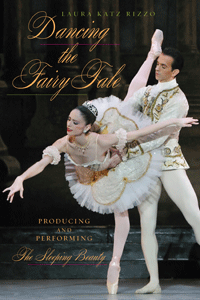

The Sleeping Beauty and the story of ballet in Pennsylvania
The Sleeping Beauty and the story of ballet in Pennsylvania


 The Sleeping Beauty and the story of ballet in Pennsylvania
The Sleeping Beauty and the story of ballet in Pennsylvania

|  |
Dancing the Fairy TaleProducing and Performing The Sleeping BeautyLaura Katz Rizzopaper EAN: 978-1-43991-122-8 (ISBN: 1-4399-1122-3) |
"Dancing the Fairy Tale offers a new historical perspective on the development of the art of ballet and the pivotal roles women have played as performing artists, directors, and producers. Using The Sleeping Beauty as her vehicle, Laura Katz Rizzo debunks the prevailing historical narrative that ballet’s evolution has been linear and dominated by male choreographers and directors, effectively arguing that the ballerina is an integral part of the creative process. Well written and extensively researched, Dancing the Fairy Tale will be a welcome addition to any balletomane’s library and an excellent text for courses in dance criticism, dance history, and women’s studies."
—Rory Foster, Professor Emeritus at DePaul University and author of Ballet Pedagogy: The Art of Teaching
In Dancing the Fairy Tale, Laura Katz Rizzo claims that The Sleeping Beauty is both a metaphor for ballet itself, and a powerful case study for examining ballet and its production and performance. Using Marius Petipa and Pyotr Tchaikovsky's classical dance--specifically as it was staged in Philadelphia over nearly 70 years--Katz Rizzo looks at the gendered nature of women staging, coaching, and reanimating this magnificent ballet, and well as the ongoing push-pull between tradition and innovation within the art form.
Using extensive archival research, dance analysis, and American feminist theory, Dancing the Fairy Tale places women at the center of a historical narrative to reveal how the production and performance of The Sleeping Beauty in the years between 1937 and 2002 made significant contributions to the development and establishment of an American classical ballet. Katz Rizzo highlights not only what women have done not only behind the scenes, as administrators, producers, or directors of ballet companies and schools, but also as active interpreters embodying the ballet's title role.
In the process, Katz Rizzo also emphasizes the importance of regional sites outside of locations traditionally understood as central to the development of ballet in the United States.
Excerpt available at www.temple.edu/tempress
"Laura Katz Rizzo addresses omissions in the literature on ballet historiography by using the perpetuation of the ‘canon’ itself to critique the exclusion of the voices of women whose labor constructs the canon. Her consideration of the production and reception of The Sleeping Beauty in particular contexts provides the framework for tracing and retrieving unwritten stories. Dancing the Fairy Tale is a fascinating study in women’s creative contribution to ballet production."
—Jennifer Jackson, Senior Lecturer in Dance at the University of Surrey
"Katz Rizzo’s research is impeccable…. [This] invaluable study should be required reading for anyone interested in Philadelphia’s ballet history."
—The Dance Journal
"Successfully arguing that the ballerina is the critical part of the ballet's research process and of the choreography, the author provides an enlightening discussion of the women involved in a production of Sleeping Beauty, and at the gendered nature of many facets of the production.... A fascinating, well-researched examination of women's influences on ballet production. Summing Up: Highly recommended."
—CHOICE
Acknowledgments
Introduction/Prologue
1. Women Creating Ballet: The Case of The Sleeping Beauty
2. From Saint Petersburg to Philadelphia: Reviving and Reanimating Classicism in America
3. Catherine Littlefield and The Sleeping Beauty’s American Premiere (1937)
4. Aurora Streamlined and Accelerated: Barbara Weisberger and the Second U.S. Production (1965)
5. Aurora Speaks: What Ballerinas Have to Say about The Sleeping Beauty
6. The Power of Dance Technique and the Agency of the Ballerina
Conclusion/Curtain Call
Appendix: Plot and Stage Action
Notes
Index
Laura Katz Rizzo is the Program Director of the Bachelor of Fine Arts Program in Dance and an Assistant Professor of Dance at Temple University. She is also a frequent guest speaker, choreographer, and pedagogue at universities and ballet companies throughout the United States and abroad.
Music and Dance
Philadelphia Region
American Studies
© 2015 Temple University. All Rights Reserved. This page: http://www.temple.edu/tempress/titles/2312_reg.html.